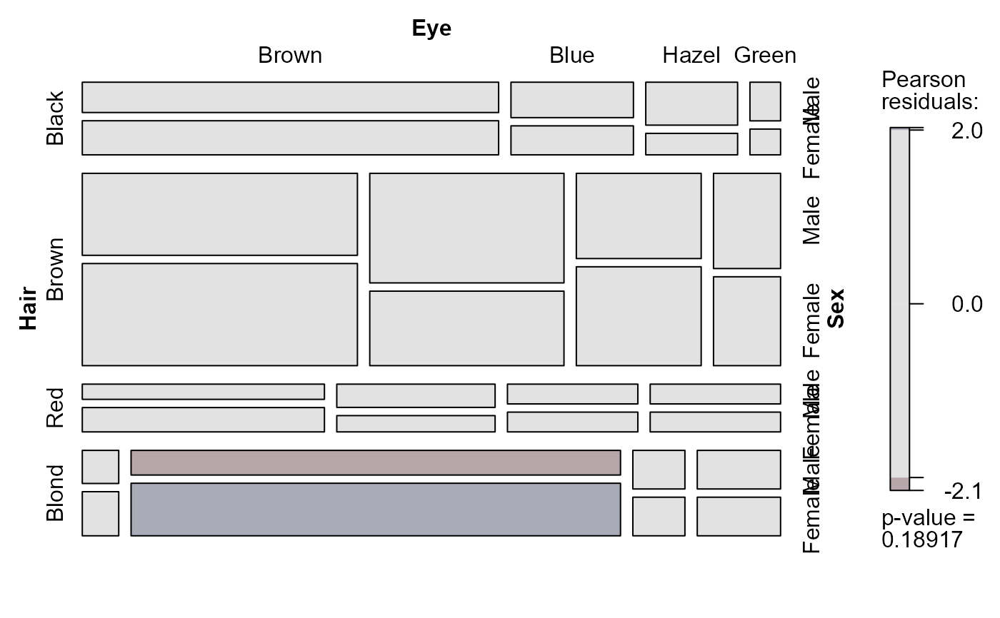
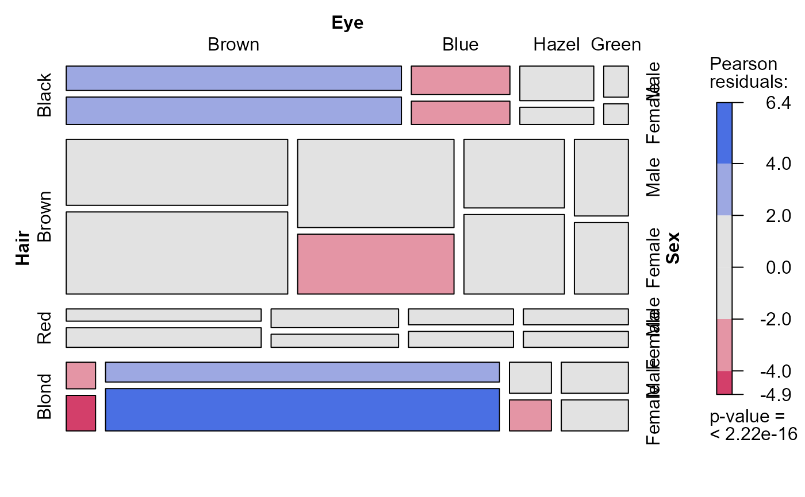

Loglinear Model Utilities
loglin-utilities.RdThese functions generate lists of terms to specify a loglinear model
in a form compatible with loglin and also provide for conversion to an
equivalent loglm specification or a shorthand character
string representation.
They allow for a more conceptual way to specify such models by a function for their type, as opposed to just an uninterpreted list of model terms and also allow easy specification of marginal models for a given contingency table.
They are intended to be used as tools in higher-level modeling and graphics functions, but can also be used directly.
Usage
conditional(nf, table = NULL, factors = 1:nf, with = nf)
joint(nf, table = NULL, factors = 1:nf, with = nf)
markov(nf, factors = 1:nf, order = 1)
mutual(nf, table = NULL, factors = 1:nf)
saturated(nf, table = NULL, factors = 1:nf)
loglin2formula(x, env = parent.frame())
loglin2string(x, brackets = c("[", "]"), sep = ",", collapse = " ", abbrev)Arguments
- nf
number of factors for which to generate the model
- table
a contingency table used only for factor names in the model, typically the output from
tableand possibly permuted withaperm- factors
names of factors used in the model formula when
tableis not specified- with
For
jointandconditionalmodels,withgives the indices of the factors against which all others are considered jointly or conditionally independent- order
For
markov, this gives the order of the Markov chain model for the factors. Anorder=1Markov chain allows associations among sequential pairs of factors, e.g.,[A,B], [B,C], [C,D].... Anorder=2Markov chain allows associations among sequential triples.- x
For the
loglin2*functions, a list of terms in a loglinear model, such as returned byconditional,joint, ...- env
For
loglin2formula, environment in which to evaluate the formula- brackets
For
loglin2string, characters to use to surround model terms. Either a single character string containing two characters (e.g.,'[]'or a character vector of length two.- sep
For
loglin2string, the separator character string used for factor names within a given model term- collapse
For
loglin2string, the character string used between terms in the the model string- abbrev
For
loglin2string, whether and how to abbreviate the terms in the string representation. This has not yet been implemented.
Details
The main model specification functions, conditional, joint,
markov, ..., saturated,
return a list of vectors indicating the marginal totals to be fit,
via the margin argument to loglin.
Each element of this list corresponds to a high-order
term in a hierarchical loglinear model, where, e.g., a term
like c("A", "B") is equivalent to the loglm
term "A:B" and hence automatically includes all low-order terms.
Note that these can be used to supply the expected argument for
the default mosaic function, when the data is supplied
as a contingency table.
The table below shows some typical results in terms of the standard shorthand notation for loglinear models, with factors A, B, C, ..., where brackets are used to delimit the high-order terms in the loglinear model.
| function | 3-way | 4-way | 5-way |
mutual | [A] [B] [C] | [A] [B] [C] [D] | [A] [B] [C] [D] [E] |
joint | [AB] [C] | [ABC] [D] | [ABCE] [E] |
joint (with=1) | [A] [BC] | [A] [BCD] | [A] [BCDE] |
conditional | [AC] [BC] | [AD] [BD] [CD] | [AE] [BE] [CE] [DE] |
condit (with=1) | [AB] [AC] | [AB] [AC] [AD] | [AB] [AC] [AD] [AE] |
markov (order=1) | [AB] [BC] | [AB] [BC] [CD] | [AB] [BC] [CD] [DE] |
markov (order=2) | [A] [B] [C] | [ABC] [BCD] | [ABC] [BCD] [CDE] |
saturated | [ABC] | [ABCD] | [ABCDE] |
loglin2formula converts the output of one of these to a model formula
suitable as the formula for of loglm.
loglin2string converts the output of one of these to a string
describing the loglinear model in the shorthand bracket notation,
e.g., "[A,B] [A,C]".
Value
For the main model specification functions, conditional, joint,
markov, ..., the result is
a list of vectors (terms), where the elements in each vector are the
names of the factors. The elements of the list are given names
term1, term2, ....
References
These functions were inspired by the original SAS implementation of mosaic displays, described in the User's Guide, http://www.datavis.ca/mosaics/mosaics.pdf
Examples
joint(3, table=HairEyeColor)
#> $term1
#> [1] "Hair" "Eye"
#>
#> $term2
#> [1] "Sex"
#>
# as a formula or string
loglin2formula(joint(3, table=HairEyeColor))
#> ~Hair:Eye + Sex
#> <environment: 0x0000029f3bb6a1f0>
loglin2string(joint(3, table=HairEyeColor))
#> [1] "[Hair,Eye] [Sex]"
joint(2, HairEyeColor) # marginal model for [Hair] [Eye]
#> $term1
#> [1] "Hair"
#>
#> $term2
#> [1] "Eye"
#>
# other possibilities
joint(4, factors=letters, with=1)
#> $term1
#> [1] "b" "c" "d"
#>
#> $term2
#> [1] "a"
#>
joint(5, factors=LETTERS)
#> $term1
#> [1] "A" "B" "C" "D"
#>
#> $term2
#> [1] "E"
#>
joint(5, factors=LETTERS, with=4:5)
#> $term1
#> [1] "A" "B" "C"
#>
#> $term2
#> [1] "D" "E"
#>
conditional(4)
#> $term1
#> [1] 1 4
#>
#> $term2
#> [1] 2 4
#>
#> $term3
#> [1] 3 4
#>
conditional(4, with=3:4)
#> $term1
#> [1] 1 3 4
#>
#> $term2
#> [1] 2 3 4
#>
# use in mosaic displays or other strucplots
mosaic(HairEyeColor, expected=joint(3))

mosaic(HairEyeColor, expected=conditional(3))

# use with MASS::loglm
cond3 <- loglin2formula(conditional(3, table=HairEyeColor))
cond3 <- loglin2formula(conditional(3)) # same, with factors 1,2,3
require(MASS)
loglm(cond3, data=HairEyeColor)
#> Call:
#> loglm(formula = cond3, data = HairEyeColor)
#>
#> Statistics:
#> X^2 df P(> X^2)
#> Likelihood Ratio 156.6779 18 0
#> Pearson 147.9440 18 0
saturated(3, HairEyeColor)
#> $term1
#> [1] "Hair" "Eye" "Sex"
#>
loglin2formula(saturated(3, HairEyeColor))
#> ~Hair:Eye:Sex
#> <environment: 0x0000029f3bb6a1f0>
loglin2string(saturated(3, HairEyeColor))
#> [1] "[Hair,Eye,Sex]"
loglin2string(saturated(3, HairEyeColor), brackets='{}', sep=', ')
#> [1] "{Hair, Eye, Sex}"